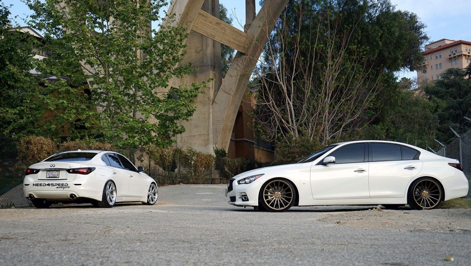
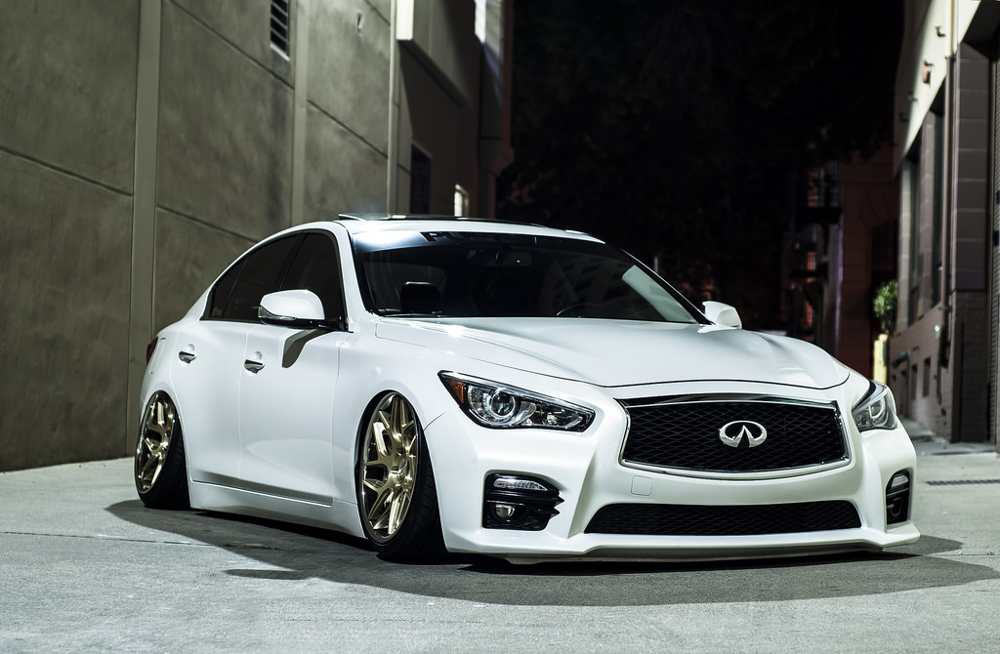
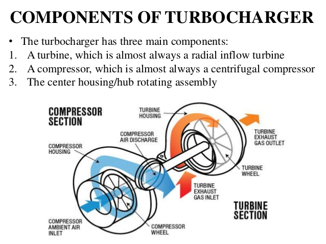

Many owners will modify the vehical after purchasing it. Most drive the vehicle every day so, in order to maintain reliability they will simply enhance the way the vehicle looks. In order to do this they will change the factory wheels out for customer wheels of varying size, width, style, and color.
Owners will also add decals (stickers), custom exhausts, cold-air intakes, tint the head and tail-lights, add customer lighting, or "Stance" the vehicle.

The process of "stancing" a vehicle consits primarly of lowering the vehical on springs or after market, adjustible, shock absorbers called coil-overs and angling the wheels inward (this is called "camber"). An example of this is pictured to the right.

While many owners seek to make their car look exaclty how they want, others focus on performance and "boost" the car. This is done by adding modifications such as super and turbochargers which give the vehicle more power
The Infiniti Q50 is a rarity in the car world as it is a vehicle that appeals to the "tuner world" (those who seek to modify and customize their car) and the general market. While the car is aimed at young professionl people from all walks of life have gravitated to this vehical because of its plethora of options, beautiful styling, Nissan's renowned reliabilty, and impressive performance.